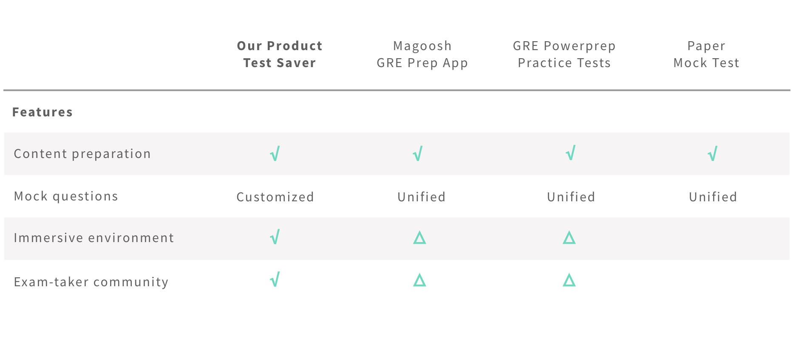
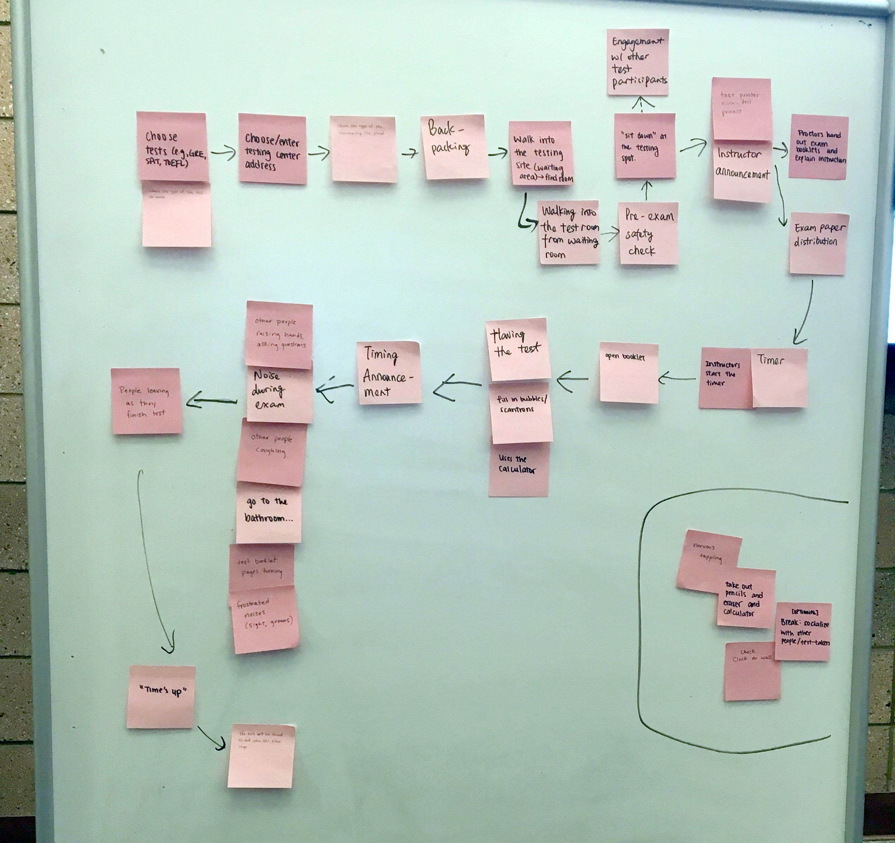
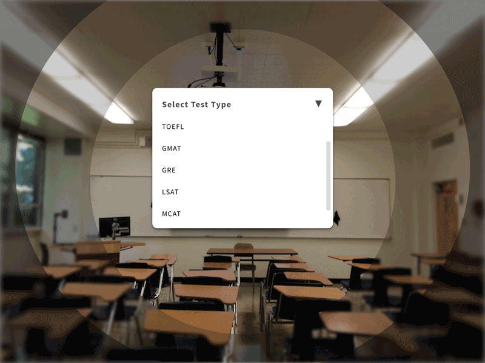

Problem Statement
Given that our society relies heavily on standardized tests, exams, and quizzes to assess students’ learning progress, our project will be focusing on test anxiety.
Domain
Our target users are test-takers who are preparing for timed, standardized tests. They are likely high school students preparing for college entrance exams (e.g., SAT), undergraduates preparing for graduate school entrance exams (e.g., GRE), or professionals preparing for graduate school, board, or other certification exams.
Context
Test anxiety often happens when test-takers are at the testing sites, or during the testing itself. There are several possible reasons that cause test anxiety: fear of failure, lack of preparation, and poor test history. Generally, a small amount of anxiety is harmless, but a larger amount of test anxiety can lead to not only emotional distress, but also physical distress, including symptoms such as headache, nausea, and excessive sweating.
Constraints
Currently, it is hard for people who prepare for standardized tests to effectively address their anxiety through completing mock tests; mock tests can be grouped in 2 formats: paper and digital 2D displays. They only show the types of questions test-takers need to answer and the ways questions will be provided. Test-takers often cannot be present in the physical space, feel the atmosphere of completing a test, or completing a test with a long period of time (e.g., 4 hours) without distraction.
Competitive Analysis

Current solutions for test anxiety mostly focus on building familiarity with the test material through repeating use of practice questions, timed practice tests, and tips that help test-takers develop strategies which boost their confidence. We did not identify any direct competitors given that VR isn’t commonly used for testing purposes.
Our Solution
User Journey
Sketches
Physical Prototype
We used Play-Doh and other 3D materials to demonstrate our idea. The advantage of clay was that we could shape it into anything we want, so it served as a great opportunity for us to demonstrate our design with full imagination. However, the challenging part was that it was difficult to create delicate little models with clay.
Digital Prototype
Version 1 - Sketch
I first used Sketch with image of academic setting which illustrates the envisioned level of image quality in a production version of the experience.
Version 2 - Ottifox
We then tried Ottifox to build the 3D environment with Google Poly models.
Version 3 - A-Frame
Given the limited interactions provided by Ottifox, we turned to A-Frame to build the 3D environment with A-Frame primitives and the same Google Poly models that we used in Ottifox.
Improvements
The was an issue with camera angle in our first version of the A-Frame prototype; this was solved by moving the camera to a different position in the code, and therefore a different position in the scene. We received feedback from classmates that adding people to the classroom might improve the experience, so we added primitive “people” in the A-Frame prototype to reduce the sense of isolation in the classroom setting.
We also added a few interactions for the Sketch Prototype. For selecting a test location, we broke it down into selecting a state and selecting a test center to make it easier to choose. We added the background-changing effect so that a user can preview the environment of the test center when making the selection. We also added one view of the user setting in front of the desktop with the test screen to make the experience more complete.
Lesson Learned
Ottifox is great for quick prototyping but limited choices for interactions. It’s very good for working quickly through what the interactions should be. It demands quite a bit of processing and battery power. More complexity and 3D models might make that problem worse. Ottifox is quite limited in the type of interactions we can have in our prototype.
A-Frame is more robust and lightweight, but requires more time to learn. We were able to build limited interaction with our existing HTML/CSS skills but would have been able to do more with this tool with some JavaScript experience and some knowledge on how to incorporate JavaScript into A-Frame’s code.
Sketch incorporates well as a tool for creating backgrounds. It is sufficient for internal communication such as discussion about the proper FOV and the contents that we want to put within FOV. However, it is not the best solution for user testing since we are unable to make it as immersive as the prototypes that we created with Ottifox or A-Frame.
It is difficult to design with text in a virtual environment, because text doesn’t have “thickness”.